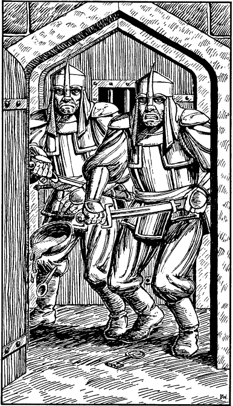

316
‘I know where your friend is,’ he says, a note of desperation creeping into his voice, ‘and I know where they’ve stowed your equipment. Let me loose and I’ll show you.’ Grudgingly you undo the manacles that encircle his wrists.
‘A thousand thanks,’ he says, massaging his aching arms. ‘My name is Sogh, master-thief of Suentina; at your service.’ He bows then motions you to follow him to a closed door behind you, next to the open one through which you entered the chamber. ‘This is the second time I’ve been invited to stay at these lodgings,’ he whispers, working on the lock with a length of wire taken from the sleeve of his leather tunic. ‘Because I decided to cut short my last visit they thought it best to keep me chained up this time.’
There is a soft click and Sogh smiles proudly as he removes the wire from the lock. ‘Ha! That was easy!’ he says, pushing open the door. Standing in the doorway are two burly guards, one clutching a bowl of food and the other holding a large iron key. ‘Hmm … I thought that lock opened a bit too easily,’ mumbles Sogh, as he backs away from the advancing guards. They drop what they are carrying and draw their swords; they are determined to prevent your escape.

Gatehouse Guards: COMBAT SKILL 20 ENDURANCE 26
Make the proper adjustments to your COMBAT SKILL for the duration of this fight, as you are without a Weapon. 14 You fight alone: Sogh is cowering behind you, using your body as a shield.
If you win the combat, turn to 259.
Footnotes
[14] The normal penalty for entering a combat without a weapon is −4 COMBAT SKILL points. Remember that Tutelaries (Kai Lords with mastery of five Magnakai Disciplines) who possess Weaponmastery only suffer a penalty of −2 COMBAT SKILL points for entering combat unarmed.